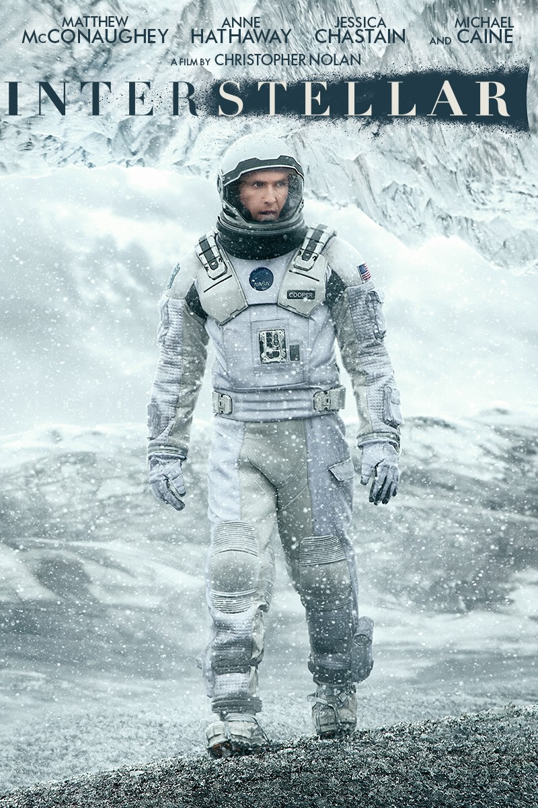

Do not go gentle into that good night..
Interstellar

In Earth's future, a global crop blight and second Dust Bowl are slowly rendering the planet uninhabitable. Professor Brand (Michael Caine), a brilliant NASA physicist, is working on plans to save mankind by transporting Earth's population to a new home via a wormhole. But first, Brand must send former NASA pilot Cooper (Matthew McConaughey) and a team of researchers through the wormhole and across the galaxy to find out which of three planets could be mankind's new home.
Empire
★ ★ ★ ★
Brainy, barmy and beautiful to behold, this is Stephen Hawking Star Trek: a mind-bending opera of space and time with a soul wrapped up in all the science.
Variety
★ ★ ★ ★ ★
As visually and conceptually audacious as anything Nolan has yet done, the directors ninth feature also proves more emotionally accessible than his coolly cerebral thrillers and Batman movies.
New York Post
★ ★ ★ ★ ★
Astronauts Matthew McConaughey and Anne Hathaway journey to a distant galaxy on a desperate mission to save humanity in this brainy, heartfelt, gorgeous and flawlessly acted sci-fi epic
Parallax View
★ ★ ★ ★ ★
This is a film where complex concepts of quantum physics and powerful human emotions are inextricably intertwined and the ghost that haunts the farmhouse has both a scientific explanation and a sense of supernatural power.